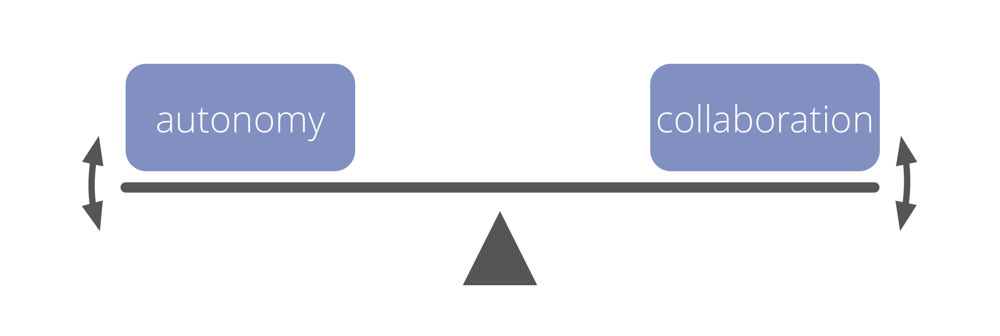

Artful participation
Committeer je aan het leveren van jouw beste bijdrage aan de effectiviteit van de samenwerking.
“Is mijn gedrag op dit moment de beste bijdrage die ik kan leveren aan de effectiviteit van deze samenwerking?”
Artful participation kan ook betekenen dat je iemand onderbreekt, bezwaar inbrengt of overeenkomsten breekt.
Artful Participation is een individuele verbintenis om:
- actief alle overeenkomsten tot je te nemen en je eraan te houden op de beste manier mogelijk, gezien alle omstandigheden
- bewustzijn en begrip te ontwikkelen van individuele en collectieve behoeften
- de noodzakelijke vaardigheden te ontwikkelen
- anderen te ondersteunen om op een goede manier deel te nemen
- de belemmeringen en verbeteringsvoorstellen zo nodig onder de aandacht van anderen brengen
Voordelen van Artful Participation
Artful participation:
- maakt het mogelijk om overeenkomsten te co-creëren en te ontwikkelen
- helpt sterkere teams te ontwikkelen
- vergroot eigen accountability, integriteit en vertrouwen
- er ontstaat een cultuur van wederzijdse steun en nauwe samenwerking
- nog krachtiger wanneer door velen omarmd

Artful Participation: toets jezelf
- Hoe ga ik mezelf en anderen steunen bij het verbeteren van hun gedrag ten gunste van Artful Participation?
- Waar zijn mijn interacties met anderen niet nuttig of ineffectief?
- Welke overeenkomsten vind ik moeilijk te handhaven of aan bij te dragen? Wat kan ik doen om dit aan te pakken?
- Welke vaardigheden kan ik ontwikkelen, die mij helpen om meer Artful aan de slag te gaan?
- Wat zou Artful Participation betekenen in relatie tot:
- mijn dagelijkse activiteiten?
- samenwerking en interactie met anderen?
- de organisatie? … onze klanten of cliënten?
- de omgeving in bredere zin?
▶ De Zeven Principes Aannemen
▲ Zaken die Co-creatie mogelijk maken